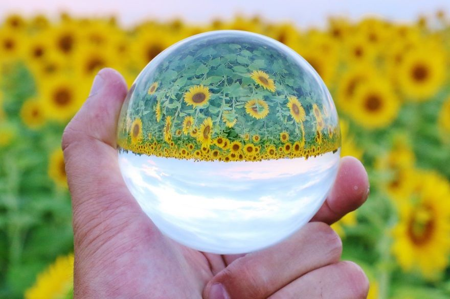
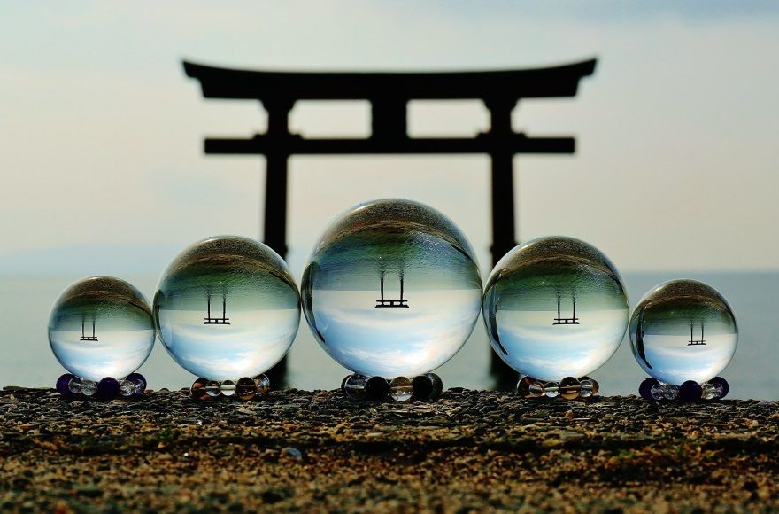

| 0の数秘術: 神秘の中に育った私の物語 | |
| Lumiere 妃宮美伶 | |
| mirairyuusuureigaku (2018) | |
「0 の数秘術」
～神秘の中に育った私の物語～
～目次～
第二節 「あなたのタイプの出し方と診断を始める前に......」
第二節 「あなたのタイプの出し方と診断を始める前に......」
はじめに...
唐突ですが......、皆様は「数秘術」をご存じでしょうか？
今から数千年前......古代ギリシャの時代から伝わる、先人達の叡智、「数秘術」。
簡単にご説明させて頂きますと......皆様を、タイ プ1～9 のカテゴリーに分け、その方の持つ「数のエネルギー」を読み解く占術です。
実は、「数秘術」には、 「0 」という概念が在りません。あくまで数の始まりは 「1 」、という考え方をしています。
ですが......ある日、私は出会ってしまいました。
「タイプ１ ～9 」という「枠」を超えてしまった、
「タイ プ0 」 の方に......。
皆様、はじめまして。 「 Lumiere ( リュミエー ル ) 妃宮美伶」と申します。
私は、「未来流数霊学」という数秘術の専門家です。
「スピリチュアル個人セッション」が私のメインのお仕事で、日々、クライアント様のご相談事にアドバイスを差し上げる日々を過ごしています。
「スピリチュアル個人セッション」では、様々な占術を用いて、多面的にクライアント様をリーディングし、問題解決へのアドバイスをしておりますが、その時にメインで使っているのが「未来流数霊学」になります。
話は元に戻りますが......「タイ プ0 」をお持ちのその方は、タイ プ1～9 のエネルギーとは違うエネルギーをお持ちでした。
その考え方や発想の全てが、タイ プ1～9 という枠を超えていて......私は、お話をお伺いしているだけで、別の次元にトリップした様な感覚になり、ワクワクと、とても気分が高揚したのを、今でもハッキリと覚えています。
そして、「タイ プ0 」の方々には、ある、とっても素敵な共通点がありました。
それは......。
「ご自分の思い通りの人生を歩んでいる」 という事。
「タイ プ0 」の方々は、ただエネルギーが特殊......という事ではなく、お仕事でとても活躍をされていますし、かつ、プライベートも充実されている......所謂（いわゆる）人生の成幸者。
みんなの究極の願いである「幸せ」を、現実的に、手に入れていらっしゃる方々です。
「１ ～9 」のエネルギーを「全て併せ持つ」とも言えるし、「全く何も無い」とも言える、特殊なエネルギー 「0 」と、その 「0 」のエネルギーをお持ちの「タイ プ0 」の人。
私は、数秘術の専門家として、概念としては「無い」はずのエネルギー 「0 」について、今現在も、観察と研究を続けています。
そして、ある時......。誰にでも、「タイ プ0 」のエネルギーを手入れ、「タイ プ0 」の人になれる可能性がある事が解り、それと同時に、その方法が、私の幼少期の過ごし方と関係がある事に気付き、とても驚きました。
そして、その日から......自分自身を使った人体実験が始まりました。
まだまだ「思い通りの人生」とまではいきませんが......、周囲の皆様にお聞きすると、良い感じで「枠」は超えてきている様です（笑）。
本書は、前半が、私の幼少期から数年前までに体験、経験してきた、ちょっと不思議で神秘的なお話。
後半は、私の憧れである「タイ プ0 のエネルギー」に関する事と、それを手に入れるために必要なツール、「未来流数霊学（数秘術）」についてお話をさせて頂いております。
これは 、 Lumier e 妃宮美伶の「数 秘0 の発見物語」。
本書を通して、ご縁を頂いた皆様が、
「本当のご自分が望む、思い通りの幸せ」に気付き、それを手に入れる為の参考にして頂けると、とっても嬉しいです。
はじめに......私の幼い頃のお話をさせてください。
「私って、どうしてこんなに怖がりなの？」
幼い頃の私は、とっても怖がりでした。
幼さから......自分が何に怯えているのか、何を怖がっているのかが全く理解出来ず......、とにかく、いつも心臓をバクバクさせ、ビクビクしていました
今となっては、それが「人」であったり、目には見えない「魂の存在」から発せられる、「波動」や「エネルギー」であったりというものに、敏感に反応していたという事が解りますが、幼い私にはそれを知る術も無く......ただただ、何かに反応して怯えてばかりでした。
高校生の頃に気付いたのですが、私は幼い頃から、「感覚」が異常に鋭く......、それは「霊感」と呼ばれるものに近かったのかもしれません。何かの気配を感じる、という事が殆どでしたが、有り得ない場所で首から上のみの存在に遭遇したり、ある場所で、散切り頭の頭部が転がっているのを見付けたり......。視覚でハッキリ視る事も多々ありました。
それ以外にも、周りの人が言葉や表情に出していない感情を感じ取ったり、頭の中で考えている事が解ってしまったり。何も話を聞いていないのに、その方の状況を言い当ててビックリされた事も、よくありました。
こうして書いてみると、やはり、かなり不思議な子供だったと思います（笑）。
もう少し、幼少期のお話を続けさせて頂きますね。
よく、「心と身体は繋がっている」と言われますが、本当にその通り......。常にそんな精神状態の私は、「虚弱体質」で、頭痛や発熱、体がだるい、重い、といった症状に加え、右足の膝下に「慢性骨髄炎」という病気を発症し、成長段階の幼少期から高校生まで、炎症による激痛を抱えながら生活しなければなりませんでした。
「慢性骨髄炎」の詳しい説明は、割愛させて頂きますが、簡単に説明致しますと、感染症であり、炎症により骨が痛む病気です。
私の場合、成長期で骨が伸びる時期という事もあって、右膝下の腫れと痛みが酷く、何もしなくても「常に痛い」という状態......。疲れ等で免疫力が下がると、痛みは更に増し、激痛となり、あまりの痛さに夜も眠れず、食事が喉を通らない......と、そんな日々を何年にも渡って過ごしておりました。
とっても暗～いお話でスミマセン（笑）。
常に痛みのある状況は、本当に辛く......、それは、元からだった私のメンタルの弱さに拍車をかけ、幼少期から学生時代は、自称「超敏感体質」で過ごしました。ですが、メンタルが弱いのに、負けず嫌いな一面も持ち合せていた私は、日々をビクビクと、いつも何かに怯えながら弱々しいままで過ごすなんて「絶対にイヤ！」と......、「ある方法」を実践する事によって、徐々に強さと鈍感さを身に付ける事に成功ました。
その方法って......、何だと思いますか？？
それは...... 「人の真似をする」 です（笑）！
その頃の私は、自分で自分の事がよく解らなくて、「あなたは何が好き？」と聞かれても返答に困っていました。他にも、「これってどう思う？」と聞かれると、ブワ～っと思考が駆け巡り、いっぺんに何通りもの考えが浮かんでしまって、その中でどの考えを選択すれば良いのか解らず......、返答にすごーく時間が掛かったり、結局、返答出来なかったり......。
「自分で自分の事が解らない」ってどういう事？
そう感じられる方がたくさんいらっしゃると思いますが......、それは私にとってかなり深刻な悩みでした。だって、みんなは質問に即答出来るし、ポンポンっとキャッチボールの様に会話が弾んで楽しそうなのに、私だけ出来ないんですもの。
だから......「人と話す事が怖い」。
ずっとずっとそう思っていました。
そして......、先ほどの話に戻りますが、当時の私が実践してみた「人の真似」。これが悩みの解消にとても役に立って......、私は無事に（？）みんなと同じように即答が出来る様になったのです。
具体的に何をしたのかと言いますと、「とにかく人を観察して」→「こういう時にどうするのか、どんな返答をするのか」を、分析しました。そして、質問された時に真似して答えてみる。毎日毎日、「観察と分析、真似をする」の繰り返し。
結果、私はそのデータを元に、「あなたは何が好き？」や「これってどう思う？」という質問に即答する事が出来る様になりました。
ようやく手に入れた「みんなと同じ」でいられる「幸せ」！
お友達とお話しする事が怖くなくなって、学校に登校するのも嫌じゃない。「何て幸せなの！」......と、しばらくの間はウキウキしていたのですが......。
ある時、ふと、「いつもモヤモヤしている自分」に気付きました。
お友達と話していても楽しくない。疲れる。１人でいたい。みんなと仲良く会話や交流が出来るようになって楽しいはずなのに
「どうしてこんな気持ちになっちゃうの？」
その原因を理解するには、とってもとっても長い時間が掛かりました
話は少しズレますが、私は小学生の頃から「占い」が大好きでした。
はじめは占いの雑誌を買っていたのですが、中学高校以降は単行本まで買い集め、本棚は「占い本」ばかり。家族から、「そのうち宗教にハマるのでは？」と心配されていた程です（笑）。
どうしてこんなに幼い頃から「目に見えない世界や占いに興味があって、縁が深いのか？」という事に関しては、後述の「点と点が線に繋がった瞬間」で詳しくお話したいと思うのですが、先述しました様に、幼い頃の私は特に霊感が強く、他の方には見えないものを視たり。その存在を感じたり、また人の考えている事を感じ、簡単に読み取る......という事を普通にしていました。
話を戻しますね。「超敏感体質で弱弱（よわよわ）の私」が楽しく生活するために、「人の真似をする」事を実践して得られたもの。
「みんなと同じでいられる幸せ」。
私はこの幸せを守るため、それから学校生活、社会生活を円滑に過ごすため......人の真似を何年も何年も続けました。
当時は、現在のような「個性を大事に」という考えが主流ではなく、「協調性を大切に」「和を乱してはいけない」といった考えが主流でしたので、私自身、それらの考えを自分の中で大きく捉えていた気がします。勿論、「協調性」も「和」も大切な事ではありますが、
周りの人間関係から「はみ出す（個性を出す）」事に対して必要以上の怖れを抱く原因になっていた様に思います。
はじめはとっても幸せに感じられていた「みんなと同じでいられる事」。
ですが、その「幸せ」は長くは続きませんでした。
ある時から突然、何故か以前とは違う「ストレス」を感じ始め、その「感覚」に気付いてからは、あんなに幸せに感じていた日々が、心のモヤモヤと違和感を抱えながらの日々に変わっていきました。
「どうしてこんなにモヤモヤするの？」その状態から抜け出したくて、思考を使って一生懸命頭で考えても、理由は全く浮かばず......どうする事も出来ないまま、何年も何年も、時間だけが過ぎていきました。
中学、高校と成長する毎に、私の弱々なメンタルは、少～しずつではありますが、落ち着いていきました。右足の膝下の痛みは続いていたので、それはとても辛かったのですが、幼少期の「ビクビク超敏感時代」と比べれば、気持ちに余裕も生まれ、日々の生活も楽しく充実していました。
ですが、心のモヤモヤは常に付きまとい、消える事が無く......頭では「この状況は楽しいハズ」と認識はしているのに、心が「全然楽しくない」と感じている、という状態。
今思えば、心は感覚で正直なんだけど、頭では「楽しくないはずはない」と自分に言い聞かせていたように思います。
そんな頭と心がチグハグな状態が何年も続いたある日の事......確か高校生の頃だったと思います。ふと思い付いて、幼い頃から大好きだった占いの本を手に取り、パラパラとめくってみたところ......、ある言葉が私の目に飛び込んで来ました。
「この星を持つあなたは、あっけらかんとしたタイプで......」
驚いた私は、本を２度見したのをよく覚えています（笑）。
何故って......、当時の私の中には「あっけらかん」というセルフイメージなんて、ある訳がなかったから。「あっけらかん」とは、検索してみると、「何もなかったように平然としているさま」と書かれています。
幼い頃は「超敏感体質」。その後も、人を「観察、分析、真似」をして、ようやくみんなと会話が出来るようになった私。そんな私とは、まるで縁の無さそうな「あっけらかん」という言葉。それを目にした時の驚きは、ウン１０年経った今でも（笑）、ハッキリと覚えています。
占いは、元々大好き。そして、「受け入れる」事がとっても得意。それにプラスして、「自分の事がよく解らない」という状態でした......。そんな私は、「あっけらん」という性質が、１つの要素として自分の中にあったら、どんなに「幸せ」なんだろう～、そう真剣に思いました。
そして、そう思った事がきっかけで、私の人生で２回目の変革期がやってきました。
突然訪れた２回目の変革期。その時から私が何を始めたと思われますか？
ここまでお読みくださった素敵な皆様は、既にお分かりだと思いますが......（笑）。
それは......。
「あっけらかんなフリをする」 です（笑）！
「あっけらかん」なフリをするのは、意外に簡単でした。だって......ずっとずっと何年も、「みんなはこういう時どうするか」「こう質問されたら何て答えるか」等々、人を観察して「真似」をしてきたんですもの。「誰かの真似」が、ただ「あっけらかんなフリ」に変わっただけの事。なので、私は軽～く「あっけらかんな自分」になりきって、日常生活を送り始めました。
すぐに......ではありませんが、「あっけらかん」というキーワードは、徐々に私の一部となっていきました。
そんなある日、私はまたまた気付いてしまったんです。以前抱えていたモヤモヤが薄れて、毎日を気分スッキリ、楽しく過ごしている自分に......。
「あれ？ あのモヤモヤはどこにいっちゃったの？」
特に嬉しい事があった訳でもありませんし、良い出来事が起きた訳でもありません。とっても不思議でしたが、どう考えても、「あっけらかん（なにが起きても平然としている）のフリ」を始めたから......以外に思い当たる節はありません。
「あっけらかん効果？」
まさかとは思いましたが、気分がとてもいいので、私はそのまま「あっけらかんのフリ」を続けました。
......が、しばらくして......。私の中に１つの疑問が湧き始めました。
「みんなの真似をした時はあんなにモヤモヤしたのに、あっけらかんのフリをしている今は、どうしてこんなにスッキリしているの？」
同じような事をしていただけなのに......、いったいどうして......？
話は少し逸れますが、占いは「統計学」です。
統計学とは、「データを取得して分類した」ものですので、元々バラツキがあるもの。ですので、占いも 「 10 0 ％完全に、ピッタリ当てはまる」というものではなく、「そういった傾向にある」と捉えて、参考にして頂くものだと、私は思っています。
幼い頃から占い好きな私でしたので、高校生の頃には「占いは統計学」という事も十分承知をしていました。
それを踏まえた上で......あの日、突然目に飛び込んできた「あっけらん」という性質が、１つの要素として自分の中にあったらいいな......と感じ、「フリ」を始めた私でしたが、そのスッキリ感を味わう度に浮かんでくる、「みんなの真似をする事と、どこが違うの？」という疑問。
考えても考えても、当時の私には全く解らなかった疑問の答えですが、それは......ある日、友人の口にしたある一言であっという間に解決してしまいました。
「○○ちゃん（私）って、何が起きても動じなくて、本当にあっけらかんとしてるよね。羨ましいよ～。」
とってもとっても嬉しかったです。同時に私は「あっけらかんは、私の一部になったんだ......」そう思いました。
そして、私は頭で、「友人は私の努力を知らないから、元々あっけらかんな人だと勘違いしてるのね」と、そう理解しました。が、次の瞬間、ある言葉がポンと頭に浮かんで、ビックリしてしまいました。
「あなたは元々あっけらかんとした人。だから、その元々の生き方をするとスッキリできるんだよ」
正直にお話ししますと、こういった現象はその時が初めてではなく、しょっちゅうではありませんが、度々起きていました。ですので、ポンッと降ってきた言葉については、「あ、まただ」位にしか思いませんでしたが、当時の私は、その言葉そのものに、物凄～く衝撃を受けました。
その言葉の意味を理解した時......、「みんなの真似」をしていた頃の「心のモヤモヤ」の原因がハッキリ解りました。周りに合わせて、無難に当たり障りのない自分で生活していた私。それはある意味、自分の中に人の意識を取り入れて、自分ではない他人の人を生きていた事になります（よね）。そんな生き方、モヤモヤしないはずがありません。
「本当の自分を探してみよう」
その頃は、まだ、数年前よく耳にした「自分探し」という言葉を口にする人はいませんでしたし、そんな言葉を聞いた事もありませんでした。
ですが、体験して知ってしまった「元々の自分の生き方をすると、スッキリ生きられる」という真実は、その時から私の心と身体に染み付いて離れる事はなく......その言葉の意味を更に腑に落とす為、「自分が解らない私の、実践と実験の人生」は、始まりました
「あっけらかん」といった「キーワード」は、統計学を信じて、出来るだけ「占い」の自分のタイプからチョイスしました。「好きなキーワード」、「ピンッと来たキーワード」。それ以外にも、「こうなりたい自分」からキーワードをチョイスする事もありましたが、実践する事自体「難しい」と感じてしまい、上手くいかなかった記憶があります。
とっても簡単に出来る「自分探し」は、すごく楽しかったです。
例えば、集団の中で「みんなとワイワイ騒ぐのが好き」なのか、「独りで過ごすのが好き」なのか......。それを知りたかったら、その状況を作り、試しました。何度も何度も......。勿論、その時々で、周りの人間やシチュエーションが変わるので、どちらが自分に合っているのか解りにくい場合もありましたが、いろいろな事を試しては、「自分に合うキーワード」を求め続け、私は「セルフイメージ」を確立していきました。

話はガラッと変わります...。
その方との出逢いは、私にとって、とても大きな衝撃でした。
「多分......本物のイタコがいるよ」
知人からそう聞いて、私はいてもたってもいられず、突き動かされる様に、その方に逢いに行きました
大好きな神社の近くの古民家風の居雑貨屋さんの一室に、その方はいらっしゃいました。お互いの簡単な自己紹介の後、お経を唱え始めるイタコさん。そのお経は、どうやら、あちらの世界とこちらの世界を繋げて、イタコさんが自分の身体という器に、亡くなられて魂となった存在を受け入れる為の儀式だった様です。
お経を唱え始めて４～５分後......イタコさんは突然話し始めました。驚く事に、先ほどとは全く声のトーンも喋り方も違います。
「私は、常にあなたと共にいるものです」
後で知ったのですが、この時、イタコさんに憑依して私とお話ししてくださったこのお方は、古代中国で位の高い方々を相手に易をされていた易者さんだったそうです。
イタコさんに憑依されたその方は、続けて、こうおっしゃいました。
「あなたは、この者が本物かどうかを確かめに来たのでしょう。そして、この者が本物だという事が解ったはずです。もうお帰りなさい」
喋り方も声のトーンも、さっきまでのイタコさんとはまるで別人で、私は疑う余地は少しもありません。
私は言いました。
「このイタコさんが本物だという事は、よく解りました。ですが、もっといろいろな事を詳しく聞かせてください」
すると、その私の指導霊様は言いました。
「分かりました。今日はあなたのお仕事についてお話しましょう」
こうして、私に対する指導霊様によるセッションは始まったのです。
この、イタコさんを通した指導霊様によるセッションは、週に 計2 回 、4 時間程ですので、こちらでお伝え出来るお話は、ほんの一部になってしまいます。特に印象に残っているお話のみご紹介致しますね。
ま ず1 つ目。
１番印象に残っていて、驚かされたお話です。あるセッションで、指導霊様は。私にこうおっしゃったのです。
「あなたは沖縄が嫌いではありませんか？」
実は、私は何故か沖縄が嫌いでした（沖縄の方、気を悪くしないでくださいね）。
みんなが大好きで、よく旅行に行かれている沖縄。なのに私は、「沖縄」という文字を見るだけで「怖い」と感じてしまい、行くなんてもっての外。
ずっと、「どうしてなのかな？」という疑問はありましたが、行かなければ良いだけですので、深く考える事はありませんでした。
指導霊様は、それについてズバリと切り込んで来られたのです。
「え......？ はい。苦手です。どうしてでしょうか？」
私が答えると、指導霊様はおっしゃいました。
「あなたは、以前、沖縄でユタ（※）をしていました。毎日毎日海辺の洞窟で、ひたすら『我』を捨て、上からのメッセージを受け取る修行をしていました。修行を終え、ユタとしてお働きをしていたある日、事情があり一般人と共に暮らさねばならなくなった。開かれたまま一般人と生活を共にしたあなたは、とうとう狂い死にしてしまった。その記憶から......あなたは沖縄が好きではないのです」
驚く私に、指導霊様は続けておっしゃいました。
「あなたは、その時の人生をやり直すために、今世（こんせい）に生まれてきました。だから、あなたは開かれたままこの世に生れ落ち、何でも分かってしまうという状態で一般人として生活するという修行をしなければならなかった。開かれた状態で一般人として普通に生活する事が、どれだけ辛く大変な事なのか......。それを経験してきたあなたなら解るはずです」
第一章でもお伝えしましたが、私は幼い頃から、超が付くほど敏感で。精神の弱さから身体も弱く虚弱体質。
この言葉を聞いて、驚きと共に当時の記憶が蘇り、涙が止まりませんでした。
指導霊様がおっしゃるには、私は、「開かれたまま、一般人として現実生活という修行をし、乗り越えた後に、スピリチュアルをお仕事にする」という、過去世とは逆の順番を辿ることが決まっていたそうです。
そして、指導霊様はこうもおっしゃいました。
「結界が張られている様な、出来上がっている【場】でする修行よりも、普通に生活をすることの方が、より【修行】になる」と。
その後も指導霊様のお話は続きますが、長くなりますので、この辺で終わりにしますね。
ただ、私がこの本を書くきっかけをくださったのは間違いなくこの指導霊様ですので、指導様のお話はこの後も何度か登場致します。
そして、興味深い事に、目の前で私の指導霊様を憑依させてお話をしてくださったイタコさんも、同じく過去世（かこせ）では沖縄でユタをされていたそうです。
やはり、ご縁のある方とは、今世でも出会うようになっていますね。
幼い頃からの超敏感体質。
人が感じている事、隠している事が何故か分かってしまう。
何故か沖縄が苦手。
会社勤めの後、自然に占スピリチュアルをお仕事にした事......。
そんな、すべての点が線に繋がりました。
私にとって、とても貴重な瞬間だったのです。
※ユタとは...沖縄県、鹿児島県奄美地方の民間霊媒師（シャーマン）であり、霊的問題のアドバイス、解決を生業とする。霊能力者。東北のイタコ同様、口寄せの巫女 （ Wikipedi a より）。
思いがけず、指導霊様からセッションを受け、アドバイスを頂く事になった私。
その内容は、それ以降の私のお仕事やプライベートに、とっても大きな影響を与えてくださいました。また、その時に指導霊様がおっしゃいました「今後、私の身に起こる事」。指導霊様とお話ししてから今現在まで、５年以上が経過しておりますが......、驚く事に、その時におっしゃった事は、全て本当に私の身に起きました。
また、セッション中に指導霊様からアドバイスとして頂いた「お言葉」は、とても素晴らしい「教え」として、未だに色あせる事無く、私の心の中に在り......、事ある毎に私を大きな悩みから救ってくださいました。
今、私は、本書を書きながら......、改めて「守護霊（指導霊を含む）」という有り難い存在に、感謝の気持ちで心がいっぱいです。
それでは、ここからは、とてもとても不思議な、「指導霊様から頂いた教え」について、お話し致しますね。
皆様のお役に立てると嬉しいです。
★「幽顕不二」「現幽不二」
指導霊様は、この言葉を厳かな口調でおっしゃいました。
「あなたには、この意味が解りますか？」と聞かれ、私は「いいえ、解りません」と答えました。
「この世とあの世は２つのものではない。全て繋がっている」
「だからあなたは人格を磨きなさい。そうすればあの世の霊格の高いものと繋がり、より良いメッセージを頂く事が出来る。人格＝霊格なのです」
このお話は、今でも本当によく思い出します。そして、今では、私の「教訓」となっています。「メッセージを受け取り、お伝えする」という使命、役割を与えられている身としては、忘れてはいけない「教え」の１つです。
また、同業者の方に知って頂けると嬉しいなって......そう思っています。
そして、実は、この「人格＝霊格」のお話には、続きがあります。お伝えしたい気持ちもありますが、「霊能者」「霊能力」を生業になさっている方々にとっては、なかなか厳しい「教え」ですので......今回は控えさせて頂きますね。
★「自分で自分を【愛】で満たし、【愛】を与えなさい」
「人は皆、【愛】に飢えている。だから、あなたは人に【愛】を与えなさい。その為には、まず自分で自分を愛する必要がある。自分で自分を【愛】し、【愛】に満ち溢れた人から、【愛】は伝わる」
こちらも大好きな「教え」の１つです。
本書を読んでくださっている感覚派で、とっても優しい皆様は、どうしても自分の事より人を優先しがち......。けれど、本当は「私にとっての最善は、周りにとっても最善」なんです。だから、思いっきり「自分の気持ちを優先」して、「自分を愛して」あげてくださいね。
「愛に満ちたあなたの波動（エネルギー）」は、波紋の様に周りに伝わり拡がります。そして「与えた愛の波動」は、巡り巡って、違うカタチであなたの元に戻ります。ご自分を「愛で満たし」、周りに「愛を与え」、更に大きな愛を受け取る......。
あなた自身が、 「 happ y 連鎖」の発信源になっちゃいましょう。
他にも細々（こまごま）と......いろいろなアドバイスや教えを頂きましたが、かなりプライベートな内容になりますので（実際に「それ」が起きた時は、本当にビックリしました）、そちらは割愛させて頂きますね。
「幽顕不二」「現幽不二」、そして、「自分で自分を【愛】で満たし、【愛】を与えなさい」という教えは、私も日々心掛けております。よろしければ、ぜひ、参考になさって実践してみてくださいね。
私は今現在、「未来流数霊学マスター」をしています。
「未来流数霊学アドバイザー講座」と、「未来流数霊学カウンセラー講座」という講座を持ち、受講生の皆様に、「数秘術」を伝授しております。
実は、指導霊様からのセッションを受けた、 約5 年前まで、既に「リーディング鑑定」「セッション」をしてはおりましたが、「手相」がメインであり、それにプラスして、「西洋占星術」「陰陽五行占い」等の占術数種類をツールに、クライアント様のお悩みにアドバイスを差し上げておりました。
そう、当時、何故か「数秘術」は使っていなかったのです。今考えると、どうして使っていなかったのかが不思議なのですが......。
そんな当時の私が、どうして「数秘術のマスター」になったのかと言いますと......。
実は、指導霊様から頂いたアドバイスがきっかけでした。
そのアドバイスとは......。
「あなたには数の素養があります。とはいっても、【数学】のようなものではなく、【数のエネルギー】を読み解く才能があります。ですので、数秘術やエニアグラムを学びなさい」
また、指導霊様は、こうもおっしゃいました。
「古代の時代から【数】や【図形】は、宇宙の真理をカタチに表したものである」
補足ですが......、ここで指導霊様がおっしゃっている「数」は、「数字」ではありませんし、この場合の「図形」とは、「三角や四角」の事ではなく、「神聖図形」を意味しています。
日本では、昔から「言葉には魂（霊）が宿る」と信じられていて、それを「言霊（ことだま）」と呼んでいますが、数にも魂（霊）が宿り、それを「数霊（すうれい、かずたま）」と呼びます。
また、神聖図形の様に「形にも魂（霊）が宿り、それを「形霊（かただま）」と呼んでいます。
指導霊様から、不思議で面白いお話を伺う事が出来て、また「数の素養がある」と言って頂いて、とても嬉しかった記憶があります。単純な私は、帰宅後すぐに、本棚から「数秘術」と「エニアグラム」の本を取り出し、再度読み直し、１週間と経たないうちに、「数秘術」を使ってセッションを開始しました。
世の中には、様々な占術がありますが、「数秘術」は、単純過ぎず、複雑過ぎず、セッションではとても使い勝手が良い事が解りました。
更に、指導霊様がおっしゃった様に、私は「数」を見ると、その「数」の持つ「世界観」が目の前に拡がるのを感じ......、その「数のエネルギー」の影響を受けるクライアント様に必要なメッセージを、以前より簡単に受け取る事が出来る様になりました。
そんな経緯もあって、私のセッションは、「数秘術」メインに移行していき、私は「数秘術」の世界に入り込んでいったのです。
それから２年後、様々な「数秘術」の本と、「セッション」や「リーディング鑑定」で、クライアント様から直接得た情報を元に、「未来流数霊学」の各講座を創り、皆様にお伝えし始めました。ですので、今の私が在るのは、指導霊様のおかげだと思っていますし、心から感謝をしています。
最後に、指導霊様はこうおっしゃいました。
「占いの本質は【あなたは～タイプだから、こうなんです】......と、クライアントをカテゴリー分けする事ではない」
「占いとは、そのカテゴリーという枠を超えて、クライアントの抱える本当の悩み、痛みに寄り添う事だ」
これらの「教え」は、私にとって、今でも「宝物」の様な存在です。
そして、これからも、これらの「教え」を軸に、セッションやリーディング鑑定を通して、クライアント様に寄り添い、心の闇に一筋の光を与える使命を全うしたい......。そう思っています。
最近は、「スピリチュアル」という言葉が一般的に使われるようになりました。そんな言葉は聞いた事がない、という方は殆どいらっしゃらないと思います。
「スピリチュアル」という言葉の意味は「霊性」ですが、一般的な使われ方としては、「占い」「ヒーリング」、他にも「エネルギーの法則」や「宇宙の法則」または「精神論」等々、「目に見えないもの」を指す事が多い様です。
皆様は、「スピリチュアル」は、お好きですか？
それともお嫌いですか？
「スピリチュアル」という言葉が嫌い......という方が多くいらっしゃるような気がしますが、「スピリチュアル＝霊性」は、私たち人間は、誰もが備え持つものです。
私たち人間は、元々「魂」の存在であり、簡単に表現すると、「魂」という本体が、「肉体」という洋服を着ている様な状態だと言われています。本当はもっと細かく、幾つかの「～エネルギー体」に分類されるのですが、そこは割愛させて頂きますね。
「肉体」という洋服をまとった「魂」という存在の私たち人間は、「魂」を成長させるために、地球という星に生まれてきました。少しだけ、「魂」だけの状態と、「肉体を持った人間」の違いのお話をさせてください。「そんな話、知ってるよ～」という方もいらっしゃると思いますが、これを機会に、ぜひ再確認されてくださいね。
「魂」だけの状態って、実はとっても便利で、「物質」ではないので、いつでもどこでもビュンと飛んで行けるのですが、肉体を持った私達人間は、瞬間移動が出来ません。当たり前なんですけどね（笑）。
それから、「魂」は「物質」ではないので「個」ではありません。この表現は解りにくいかもしれませんが、「肉体」を持っているから「私」と「あなた」、「個」「個人」という概念が生まれました。
それから、一言で「魂」と言っても、その状態は本当に様々で、中には「成仏できずにこちらの世界で彷徨っている「魂」もいます。
私達、人間の個々は、それぞれの「魂」を進化させる事を目的に、肉体を持って、この地球に生まれて来ました。何故かと申しますと、「肉体」を持つ「個」の状態の方が、「経験し、学び、成長する」を繰り返しながら、「魂」の「進化」をし易いからなんです。
私も幼い頃から何度も同じ失敗を繰り返し、同じ解決方法で解決させようとして、結局解決出来ず、ようやく別の方法でやり直して、「これが、この問題や試練の乗り越え方」というものを自分の中で確立する、という作業を続けて来ました。
ちなみにですが、問題が起きた時に、起きた問題から目を背けるのは勿論、その問題を丸く収めようとするのは、「本当の解決方法」ではありません。問題が起きた時に、その問題の本質に目を向けて、問題の根本原因を探り、解決するのが、「本当の解決方法」です。
この地球に「魂の進化」の為に生まれてきた私達。
問題が起きた時こそチャンスと捉えて、地球に生まれてきた１番のミッション、「魂の進化」をさせちゃいましょう！

第二章で、私が、指導霊様から「数秘術とエニアグラムをやりなさい」とアドバイスを頂き、数日後には数秘術を使って「セッション」を開始し......、そして、セッションで「相談事へのアドバイス」のツールとして使う度に、その的中率の高さと、単純過ぎず、複雑過ぎない明快さに惹かれ、「数秘術」が大好きになっていった......というお話をお伝えしました。
そしてある時、今後のお仕事の相談に乗って頂いていた先生からのアドバイスをきっかけに、「未来流数霊学」が出来ました。
「数秘術」は、基本的に 「1～9 」ま で9 つのタイプに分かれています。本書をお読みくださっている皆様の中には、数秘術をお勉強されて、とっても詳しい方もいらっしゃると思いますが、数秘術を知らない方の為に、少しだけお付き合いくださいね。
数秘術の歴史はとても古く、今から四千年～六千年前の古代ギリシャの時代から伝わるもので、それを伝えた人物として有名なのが「ピタゴラス」です。ピタゴラスは「数学者」のイメージが強いですが、哲学者であり、神秘学者でもありました。そして、古代ギリシャから伝わっている「手相術」も、ピタゴラスが古代インドに渡り、学び伝えたとされています。
「数秘術」は、紀元前の時代から伝わる先人達の叡智。
そして指導霊様も、「数や図形は、即ち宇宙の真理や法則を表したものである」とおっしゃっていました。
私は、古代からの叡智、「数のエネルギー」をリーディング（読み解き）し、お悩みを抱える方々に、アドバイスとして「一筋の光」をお渡しする（お伝えする）という役割を、心から誇らしく思っています。
そして、先人たちに対して......感謝の気持ちでいっぱいです。
それでは、ここで、簡単に「未来流数霊学」についてお話をさせて頂きますね。
「未来流数霊学」は、数ある数秘術の「流派」の１つです。「数秘術」には 、1～9 までのタイプがあり、「未来流数霊学」では、皆様お１人おひとりが影響を受けてい る7 つの数を、お名前と生年月日から算出します。
そして、そ の7 つの「数」には、その方の「個性」「才能」「魅力」「潜在意識」「顕在意識」「周りに与えている印象（オーラ）」「年運・月運・日運」「一生の流れ」「今世のテーマ」等が、全て表れています。
現在、数秘術は、様々な形で伝えられていますが、一般的な数秘術は「生年月日の数のエネルギー」のみを使い、個性、才能、魅力、向き不向き、今世のテーマ、使命、運気等々、全てを読み解きますが、「未来流数霊学」では、お名前を使って、その方自身の個性、才能、魅力等をリーディングしております。本来のその方自身の事は、「お名前」にハッキリ出ているのです。
そして、生年月日は「時間」そのもの。
ですので「生年月日」からは、「運気」や「運気の流れ」をリーディング致します。
これまで私は、個人セッション、イベント、講座やセミナーを通して、数年に渡って、数千名の皆様のリーディング鑑定をさせて頂きました。
その結果、「生年月日」のみで全てをリーディングするよりも、「お名前と生年月日」、それぞれの特徴を活かして、リーディングする内容を使い分けた方が「信憑性が高い」と判断し、作り上げたものが「未来流数霊学」なのです。
誤解して頂きたくないのは、「生年月日」のみを使っている皆様を批判するつもりは全くない......という事です。
何事に於いてもそうですが、全ての方々に選択する権利がありますし、誰もが、自分が「これだ」と思うものと関わればよいと思っています。
ですので、私が私自身へのリーディング鑑定した結果を含め、皆様にこれが１番自信を持って提供できると感じたもの......、それが「未来流数霊学」です。
それでは！！
古代から伝わる叡智による「皆様の本当の姿」を診断致しましょう......。
これから、皆様が「１～９」のどのタイプなのかを診断する作業に入って頂くのですが、その前に１つだけお話をさせてください。
指導霊様もおっしゃっていた「占いの本質は、カテゴリー分けする（タイプ別に分ける）事ではない。それを知り、どう活かすかが大切であり、それが占いの本質である」というお 言葉の通り、「ご自分のタイプを知る」だけでは、何も変わりません。
ですので、ご自分の本当の姿を知った後、ぜひぜひ実践して頂きたい事があります。それは......。
「本当の自分になりきる」 です。
私も、実践し続けてきました。
私達は、躾や教育、世間体といった、周りからの影響で、「本当の自分」を見失っています。「本当の自分」が解らず、自分が自分でいられない「辛さ」......。私はその気持ちがとってもよく解ります。
大きな悩みがある訳ではないのに、気持ちがスッキリしなくてモヤモヤしている......。 そして実は、大きなお悩みの影にも、「本当の自分が解らない」という根本的な原因が潜んでいる事があります。
私も、未来流数霊学で本当の自分の姿を知り、「なりきる」を実践し始めてから、何１０年も続いていたモヤモヤが、スーっと消えていくのをしっかりと感じました。今は、常にスッキリしていて、毎日とても楽しいです。
また、スピリチュアルをお勉強されて、「本当の自分で生きている自信がある！」という皆様も、再確認の為、ぜひ、お試しくださいませ。 もしかしたら、まだ気付いていない「本当の姿」を発見出来るかもしれません。
それでは......、「未来流数霊学」で解る、「本当のあなたの姿」......。見付けてみましょう！
繰り返しお伝えしますが、「未来流数霊学」は数秘術です。 数秘術とは、宇宙の真理を表す「数のエネルギー」を読み解く術。
そして、数秘術には 「1～9 」までのタイプがあり、あなたが生まれた時に神様から戴いた贈り物である「お名前」には、あなた自身の情報がたくさん隠されています。
今回は、「本当のあなた」に焦点を当て、簡潔 に9 つのタイプ別診断をして頂きますね。
☆1～9 タイプの算出方法
皆様のお名前をヘボン式ローマ字に変換します。
出生時のお名前で算出してくださいね。既婚女性は特にご注意ください。変換に迷われた場合は、「ヘボン式 変換」で検索して、正確な変換をお確かめください。
下記を参照して、お名前のアルファベットを数字に置き換えます。
数字を全て足して、合計で出た２桁の数を更に１桁になるまで足してください。
アルファベット変換表
A...1、B...2、C...3、D...4 、
E...5、F...6、G...7、H...8 、
I...9、J...1、K... 1 1、L...3 、
M...4、N...5、O...6、P...7 、
Q...8、R...9、S...1、T...2 、
U...3、V... 2 2、W...5、X...6 、
Y...7、Z... 8
※Kは 1 1、Vは 2 2 で計算してください
例.........田中 美伶さんの場合
TANAKA MIREI
2＋1＋5＋1＋ 1 1＋1＋4＋9＋9＋5＋9＝ 57
→5＋7＝ 12
→1＋2＝ 3
田中美伶さんのお名前が持つ「数のエネルギー」は、「タイ プ3 」となります。
ご自分の「数」が算出できましたら、ご自分のタイプをお読みください。
タイ プ 1
自尊心の高い、有能なリーダー。または、１人で決め１人で動く。１歩先をいく人。責任感と、強い信念を持って、やり遂げる。行動力抜群な開拓者。先駆者。自立心、独立心が強い。
タイ プ 2
他者の気持ちや考えを汲み取る優しい人。受け入れ、理解する。感受性豊かで繊細。芸術家肌。女性的。忍耐強い。まとめ役、サポート役、共感力が高い。気配りのできる人。
タイ プ 3
創造性と表現力が高い。社交的で友好的。楽観的。ドラマティックに生きる、直観力、インスピレーションが高く、哲学、アートと縁が深い。人生を楽しむ才能。エンターテイナー。
タイ プ 4
真面目で誠実、人に安心感を与える人。変化より安定を求と秩序を好み、きちんと責任を取る人。理性的で自制心が強い。忍耐強く面倒見が良いので、周りから頼られ信頼される人。
タイ プ 5
安定より刺激を求める、行動的な人。自由で刹那的。好奇心旺盛。外交的で、コミュニケーション能力が高い。変わった趣味を持つ。型にハマらず、枠からはみ出す人。自由人。
タイ プ 6
お世話好きで、人の役に立つのが大好き。家族等、距離の近い人を愛する。正義感が強くモラルを大切にする人。慈しみの心を持つ奉仕家。教え、育てる人。おもてなしの心を持つ。
タイプ７
独創的。興味のある１つの事に集中し、深く掘り下げる。１人の時間を必要とする。本当の意味で独りになるためによく寝る。直観力と分析力を持ち合わせる。知恵者。マニアック。
タイ プ 8
粘り強さと実行力で成功を手にする人。寛大で優しい。とても面倒見が良く、人に慕われ、頼られるリーダー。金運が良く、お金で学ぶ人。ビジネスセンス抜群。やり遂げる人。
タイ プ 9
並外れた共感力の高さで人を思いやる、慈悲の人。教育者、指導者、理想を掲げ、大切にする。哲学者。人と人を繋げる役割を持つ。感性豊かなロマンチスト。成熟した魂。
以上が、「数のエネルギーの特徴」であり、数秘術から見た、皆様の「本質、本当のご自分」になります。
いかがでしたでしょうか？
あまり長々書いてしまうと、意識が分散して、「なりきる」のが難しくなってしまいますので、「できるだけ分かり易い」特長を挙げさせて頂きました。
ご自分のタイプをお読み頂いた後は、ぜひ、「なりきる」を実践してみてください。お勧めは、私が「あっけらかん」を実践して「本当の自分」を見付けた様に、１つで良いのでピンッときたキーワードを拾って、「なりきってみる」......です。
どうしてそこまでして、「本当の自分」を探し、「本当の自分」に戻る必要があるのかについては、次の章でご説明致しますね。
なお、もしも、ご自分の本当の姿について、「より深く」「より多くの情報」を知りたい方がいらっしゃいましたら、「未来流数霊学アドバイザー講座」「未来流数霊学カウンセラー講座」をご受講ください。（宣伝しちゃった（笑））
講座を受講されますと、ご自分だけでない、周りの皆様の「数のエネルギー」をリーディング出来る様になりますので、既にご活躍の鑑定士や占い師の皆様にもご受講頂いております。数秘術の世界は、とても広く、そして深く...そしてとっても面白いですよ！
第三章では、「未来流数霊学」をツールに、産まれた時に神様から頂いた「お名前」で、皆様の「本当の姿」を知って頂きました。そして、「本当の姿」を知って頂いた皆様に、キーワードを使って「なりきる」事をお勧め致しました。
どうして「そんな事をしなきゃいけないの？」って......思いますよね？
実は、これにはとっても重要な意味があるんです。
「はじめに」でお伝えしました様に、私は今まで「未来流数霊学」をツールに、数千人の皆様の「セッション」をして来ました。お１人おひとりが、第三章で算出しました「お名前の数のエネルギー」を含む、全部 で7 つの数のエネルギーの影響を受ける......という考えが「未来流数霊学」であり、セッションでは、そ の7 つの数のエネルギーを総体的にリーディングしています。
いつもの様に、クライアント様にセッションをさせて頂いていたある日のこと......ビックリする事が起きました。
そのクライアント様について、またご相談内容については、個人情報の関係で、伏せてお話をさせて頂きますね。
その方は、会社経営をされています。お仕事もとても上手くいっていて、経済的にとっても豊か。また結婚生活も充実されていて、「幸せ」を絵に描いた様な方であり、とても「満たされている」方なのですが、「気になる事がある......」との事で、セッションを受けにいらっしゃいました。
セッションが始まり、いつもの様に「未来流数霊学」を使っ て7 つの数を算出し、お悩みにアドバイスをさせて頂こうとしたのですが、７つの「数のエネルギー」と、その方のエネルギーに違和感があって、上手くリーディングが出来ないのです。
その方の「数のエネルギー」と、「その方のエネルギー」が、どんな風に違和感があったのか......。それは、説明がとても難しいのですが、強いて言えば、その方のエネルギーが、 数のエネルギーの「枠」を「超えている」という感じ。
その方の「個性」や「考え方」が、タイプ１～９のカテゴリーの中に当てはまらないのです。
その方の出現は......、全ての人 を1～9 のタイプにカテゴリー分け出来ると思い込んでいた私にとって、「晴天の霹靂」と言える出来事でした。が、その事に気付いてしまったその日を境に、「枠を超えた方々」との出逢いは、少数ではあるものの、その後も増え続けていったのです。
そして、そんな方々のお話を伺っているうちに、共通点や特徴を見付けました。
それは......。
「ご自分に合った【幸せ】を理解し、手に入れている」
ううん、それだけじゃなくて......、
「ご自分の思い通りの人生を歩んでいる」
と言っても過言ではない......という事。
そんな方々を見て......すご～く素直に、「あんな風になりたい！！」、私はそう思いました。
皆様はいかがでしょうか？
「思い通りの人生」を、手に入れてみたくないですか？
それ以外の細かな共通点や特徴は、また後程お伝え致しますね。
ある日、突然現れた「タイ プ1～9 の枠にハマらない方」。私は、このタイプ１ ～9 に属さない、「枠にハマらない方々」の事を、
「タイ プ0 」
と名付け、今現在の時流に乗った「新しいタイプ」として、観察、研究を始める事にしましたのです。
「9 つのタイプ」という枠の中から、翼をひろげて羽ばたき......、枠の外に出てしまった「タイ プ0 」の人。私が出会った数名の「タイ プ0 」の皆様には、とても面白い共通点が幾つかありました。その共通点の中でも、絶対的な「大前提」の様なものが、１つ。
それは、
「経済的、肉体的、精神的に満たされていて、既に、自分の理想の生活を手に入れ、とても幸せを感じている」
という事です。
先ほどお伝えしました、「思い通りの人生」を、具体的にお伝えすると、こんな感じになりますよね。「大前提」と断言してしまいましたが、これは 、 10 0 ％、全ての「タイ プ0 」の方々に共通している事でした。
そんな、「とっても幸せ」な「タイ プ0 」の方々の特徴は、次の通りです。
★ 外見の印象に関わらず、エネルギーがとても軽い
★ 思考ではなく感覚を自然に使っている
★ 「自分にはこれ」というお仕事で、大活躍されている
★ 発想が突飛で、周りをビックリさせる。
★ 発想の転換や、気分転換が上手
★ 理想の自分に「なりきって」いるうちに、本当になってしまった（笑）
★ 現実と目に見えない世界のバランスが絶妙
★ 時間に敏感、時間の感覚が独特、または時間の概念がない。
★ 神仏を大切にしている
★ 今、この瞬間を生きている
★ 仕事、遊び、リラックス、全てに全力で取り組む
★ スクラップ＆ビルド（破壊と構築）が得意
★ 全て自分で決める
★ 全て自己責任
★ アートと縁がある
★ 右脳（イメージ）と左脳（ロジック）のバランスが絶妙
★ ストレスが少ない
★ 明るく朗らか、よく笑う
★ 普通でない話を、当たり前の様に話す
★ 落ち着いていて穏やか
★ 「過去からの積み重ねの今」ではなく「今の中の今」を生きている
★ 未来は創り出すもの、過去は活かすものと捉えている
★ 未来が見えている（ように見えます 笑）
★ 「マイペース」というより、「独特のペース」で生きている
★ 「運気」の影響を受けず、いつも調子が良い（良く見える）
★ 現実を創造しているのは「自分」という事を理解している
★ 視点が高く視野が広い
思い付く限り書き出しましたが、今のところは、こんな感じでしょうか......。けれど、たぶん、まだまだ増えると思われます。
「タイ プ0 」の方々は、こういった特徴を強烈に持ち合わせているから、周りの方達に、
「ちょっと変わった感覚の人」
という印象を与えているかもしれません。
「タイ プ0 」の特徴は、いかがでしたでしょうか？
先程の特徴の中には、「タイプ１ ～9 にも当てはまるものがあるよね？」と思われた方がいらっしゃるかもしれません。本当にその通りで、「明るくて、よく笑う」とか、「落ち着いていて穏やか」などは、タイプ１ ～9 に分けるまでもなく、たくさんいらっしゃいますよね。
ですが、実は......、「タイ プ0 」の方のそれは、一般的なものではありません。どう違うのか？ って言うと...。
「人並み外れている」んです（笑）！
ですので、宜しければ、先ほどの「タイ プ0 」の特徴を、「そんな人、どこにでもいるよ～」と思われる方は、それぞれの項目の一番先頭に、「人並み外れて」......という言葉をくっつけて、お読みくださいませ。ぜひぜひ、お願い致します（笑）。
さて。この節の本題に入りますね。
第三章で、「未来流数霊学」をツールに、「本当の自分を知る」ための作業をして頂きましたが、どうしてなのか、お分かりになりますでしょうか？
実は、「タイ プ0 」の方々も、この世に生まれ落ちた瞬間から、いきなり「タイ プ0 」だった訳ではありません。私が、セッションをさせて頂いたり、詳しくお話しをお伺いしたりした結果、どうやら「タイ プ0 」の方々も、産まれた瞬間から幼少期、学生時代、青年期辺りまでは、タイ プ1～9 の「数のエネルギー」の影響を受けて育ったようなのです。
そして、様々な経験をして、試行錯誤し、学び、成長して、今に至った。
「どうしてそんな事が言えるの？」
そう思われる方もいらっしゃると思いますが、その理由は、とても明確です。何故かと申しますと......、お名前から算出したその方のタイプのお話をすると、「タイ プ0 」皆様は、口々に、
「以前はそうだった」と、おっしゃるからです。
ですので、この事で１つだけハッキリするのが、「タイ プ0 の方」は、「タイ プ1～9 の方」が「進化した姿」だという事......。という事は、誰もが「タイ プ0 」になれる可能性がある......という事なんですね。
皆様は「タイ プ0 」のエネルギーで「思い通りの人生」を送りたいと思いませんか？
私は、「思い通りの人生」を送りたいです。そう思った日から、私は「タイ プ0 」の方の発想、思考、感情、生き方、人生観などをじっくり観察してきました。
そこで、見えて来たのが。
１．当の自分を知る → ２．自分（の長所と短所）を活かす → ３．生き生きとした人生を送る → ４．枠を外して（枠から外れて）思い通りの人生を送る
という流れです。
ここで、やっと「本題」に入る事ができます（笑）。
「本当の自分を知る」事の大切さ......。前述の流れを見て頂くとお分かりになると思いますが、「タイ プ0 」のエネルギーを手に入れる為には（何だかガツガツした表現でスミマセン）、初めに「本当の自分を知る」ところから始めなければなりません。そんな理由から、第三章で皆様に、「本当の自分の姿を知る」作業をして頂きました。
それでは、次は、「タイ プ0 」のエネルギーについて、気付いた事や「タイ プ0 のエネルギーを手に入れる為の効果的な方法を、お伝えして致しますね。
それでは、先ほどの「タイ プ0 という生き方」の流れについて、少しご説明致しますね。
1 . 「何かのきっかけで 、1～9 のご自分のタイプを自覚し、そのタイプの人生を、「プラス面とマイナス面の両面から思い切り味わった」という過去がある。
この事についてですが......ここで、皆様に１つ質問があります。
皆様には「こう在りたい自分」、「こうなりたいと目指す目標」、または「叶えたい夢」等はありますでしょうか？
そして、その目標は、「どんなご自分」が立てた目標でしょうか？
私達は、幼い頃からの環境......教育や躾、ルールにモラル、日本人の場合は特に、協調性や和を大切に......と、割と窮屈な「枠」の中で育って来ました。勿論、それは必要な事であったり、大切な事であったりしたかもしれませんが、それらを「枠」と捉えた場合、その「枠」の中で育った私達は、やはり、「そのままの......本来の姿」とは、違う姿に成長してしまいます。
そして、ほんの少し想像してくださると嬉しいのですが、そのままのご自分でない状態で立てる「目標」、「在りたい自分」「叶えたい夢」は、「心から望む本当の目標、在り方、夢」からは、どうしても逸れてしまいます......よね。
.
「タイ プ0 」の皆様は、過去の何かしらのきっかけと経験から、「本当のご自分」に気付き、「本当の自分が願う、自分の思い通りの人生」を見付け出していらっしゃいます。
今回は、「タイ プ0 」の方の様に、「本当の自分」に、ご自分で気付ける場合と、そうでない場合もあると感じましたので、「未来流数霊学」を使って「本当のご自分の姿」を探って頂く事に致しました。
第三章でお伝えしました通り、ご自分のタイプに「なりきる」と、きっと気分が良く、スッキリされると思います。
それこそが、「本当のご自分で在る」というサイン。
ただ、初めは、慣れなくて「違和感」を感じるかもしれません。が、じきにしっくりと馴染むと思います。
ただ......万が一、「違和感」が長引くようでしたら、少し注意が必要です。長年続けて来た「自分はこういう人間だ」という強い思い込みは、簡単に払拭できるものではありません。
逆に、ご自分の事が分からなくなってしまうといけませんので、そんな皆様は、「本当の自分を知る」→「受け入れる」→「認める」という作業を、ゆっくり長期的に、じっくりと行なってみてくださいね。
「ご自分を知る」事から始め、「タイ プ1～9 になりきる」事で、更に「自分への理解度」が高まった皆様にとって 、 2 . の、「自分を活かす」と 、 3 . の「生き生きした人生を送る」は、とても簡単な事です。「なりきる」事で、「頭で考えなくても」、「無理に意識をしなくても」......、とても「自然」に「自分を活かし、生き生きと人生を楽しむ」事ができるからです。
最後は 、 4 . の「枠を外して思い通りの人生を送る」です。
実は、ステップの中で１番重要なテーマは、この「枠を外す」なのです。
皆様は、「枠」って何だと思われますか？
「これはこうでなければならない」といった「枠そのもの」は、本当に千差万別で、枠を創る理由は人それぞれですが、個々が「ご自分の枠」を作り、自分や周りを縛り付けています。「自分が作り出している枠」に気付いたとしても、その「枠」を外し「枠」の外に出るには、勇気と行動力が必要になり、実際はなかなか難しいんですね（実際、「枠の無い私になりきる」という実験（笑）もしてみましたが、「枠」に気付く事が１番難しかったです）。
ですが、ある日......。ある「タイ プ0 」の方のおっしゃった一言から、「枠」を作り出しているものの正体が、「思考」なのだと気付く事が出来ました。
そのお言葉は、「時間とは、思考が作り出した概念だ」というものです。つまり、「時間」もある意味、「思考が作り出した枠」という事ですね。
「思考」は、「人間」にだけ与えられた「宝物」。
ですが、私達現代人は、やはり「思考」を使い過ぎている......と、数千人のクライアント様のお話をお聴きする日々の中、常々感じていました。
「思考」を使わない方がいいいと言っているのでなく、大切なのは「感覚」と「思考」のバランス......なのだと思います。「思考」に傾き過ぎると、「過去の失敗」や「未来への不安」を引っ張り出し、自分で自分をがんじがらめにして、「枠」に閉じ込める事になります。
もう一方の「感覚」ですが......、感覚自体が「一瞬」のものですので、たくさん使っても、「時間」や「枠」は発生しません。
そして、やはり......「タイ プ0 の特徴」でお伝えしました通り、「タイ プ0 」の方々は、「思考」よりも「感覚」を、とても大切にしています。
以上が、「枠を外す」方法になります。
私は、スピリチュアルをお仕事にする前は、会社勤めをしていました。設計課に所属し、三次 元 CA D の画面や図面と毎日にらめっこして......日々 、 3 D モデリング（平面の図面を立体にする）や 、 C G の作成をしておりました。
退職後は、全然違うお仕事がしたくなって、化粧品販売をしていました。会社勤めや化粧品販売をしていた頃は、周りの人間関係に恵まれて、それなりに楽しく充実した日々を送っていましたが、精神的な満足感を得た事は無く......いつもモヤモヤしていたのをよく覚えています。
結婚、出産等、数回の転機を経て、私は導かれる様に「スピリチュアル」な世界に戻り、お仕事までさせて頂く事になったのですが、今思えば、その時が「本当の私」に戻る為の「スタート地点」でした。
現実にどっぷり浸かって、本当の自分をおざなりにしていた私は、いつもモヤモヤを抱えていましたが、占いをお仕事にする事で、占いを活用する事に対しての理解が深まり、私は幼い頃にしていた「なりきる」を、再度、実践し始めました。
未来流数霊学から算出した私のタイプは 「3 」です。 「3 」の生き方を実践し始めると、私の心は、あっという間に軽くなり、同時に、あんなに弱々しかった身体まで丈夫になりました。
本当の自分でいる......という事は、自分のプラス面もマイナス面も受け入れていて、自分の事が大好きな状態です。自分の事が好きでも嫌いでも、同じように様々な出来事が起こりますが、嫌な事が起きてもダメージは半減ですし、立ち直りも早かったりして、毎日がとっても幸せ。ですから、心だけじゃなくて、身体も、生き生きと内側からエネルギーが湧いてきます。
それから、もう１つ......。とっても不思議な事があります。
実は、スピリチュアルのお仕事を始めてから７年間......、私は集客に困った事がありません 。1～2 日に１度、ブログを書き、趣味 で faceboo k とインスタグラムを投稿していますが、それ以外は何もしておりません。ですが、有り難い事に、セッション、講座、セミナー、イベント等...お仕事のご依頼は、絶える事がありません。
この様に物事の「流れ」がとてもスムーズになったのも、「タイ プ3 」の「本当の私」の生き方を始めてからです。おかげさまで、本当に毎日が充実しています。
そんな順風満帆な毎日を、楽しく過ごしておりましたが......。
「タイ プ0 」の方に初めて出会ったあの日......。私は気付いてしまいました。
「タイ プ3 の本当の私」ですら、「枠」だったという事に......。
私は今、タイ プ0 を目指しています。
今現在は、お仕事を通して、皆様に、「メッセージをお伝えする」という使命と、現実生活を豊かにするためのツール、「占いやヒーリングを教える」という役割を頂き、日々活動をしていますが、「タイ プ0 」になった時......、私の状況は、どの様な変化を遂げているのかしら？ と、最近よく妄想を致します。
今から、１年後、５年後、１０年後の自分が、とっても楽しみです。
本書をここまでお読み頂いた皆様に心から感謝致します。本当に本当にありがとうございました。
幼い頃の「ビクビク弱々な自分」......こんな精神状態では、この先、生きていけない！！ そう思い、「強くなりたい」と奮起しあの日から、数１０年が経ちました。
まるで女優のように「なりきる」。
当時の私は、とにかく必至で、「女優」なんて優雅なものでは全くありませんでしたが（笑）、あの酷い精神状態の中、潰れる事無く、ある意味、楽しみながら「なりきり」を繰り返したおかげで、「今の幸せが在る」という事を、執筆しながら実感致しました。
そう、「自分の人生を創り出しているのは、自分の【意識】」なんですね。
私は......人は、いつからでも、「本当の自分」に戻り、楽しく、生き生きとした人生を送る事が出来る......。そう思っています。
理由は......、私が今、とっても幸せだから！
全ては「自分の意識次第」です！
宜しければ、私に起きた事、私が気付いた事、私が実践してきた事を参考にしてください。
そして、「タイ プ0 」の方々の様に、「思い通りの人生」を、手に入れませんか？
※本書に登場しました「未来流数霊学」について。
ご自分や周りの方の事を深～く知る事が出来るようになるためのツール......「未来流数霊学アドバイザー講座」
ご自分や周りの皆様かの運気から人生の流れまで、徹底的にリーディング出来る様になるツール......「未来流数霊学カウンセラー講座」
他にも、占いやヒーリングの講座を随時開催しております。
興味を持たれた方は、ぜひ、こちらをご覧くださいね。↓
ブログ... https://ameblo.jp/kirakira-navigator
Facebook... https://www.facebook.com/kirakira.navigator?ref=bookmarks
Instagram... http://www.instagub.com/profile/miho_tanaka_miray_himiya